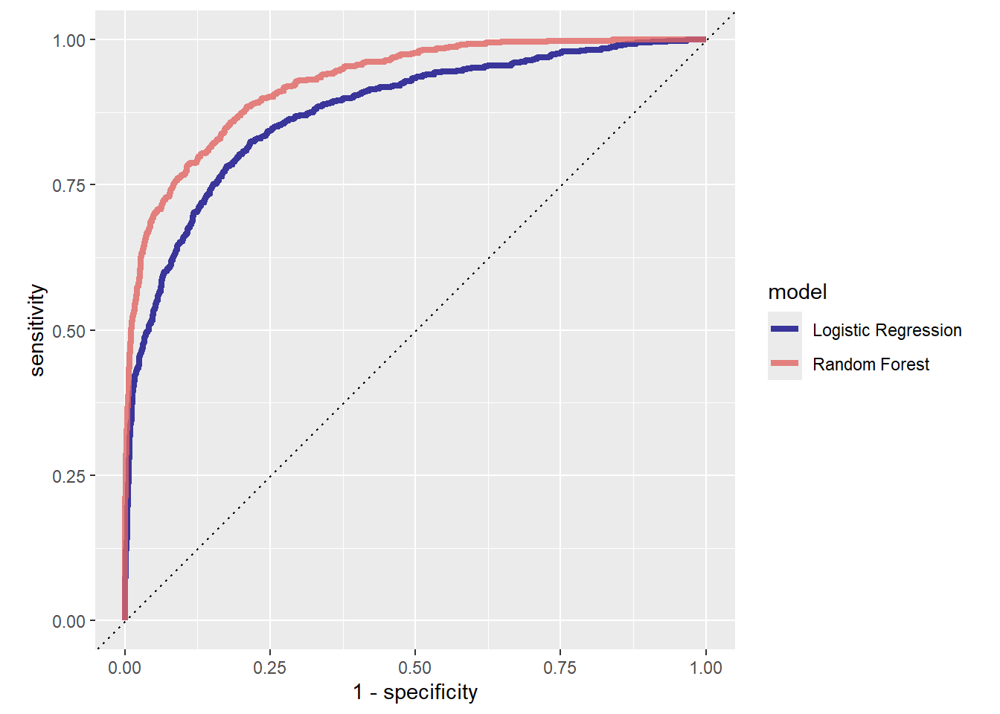
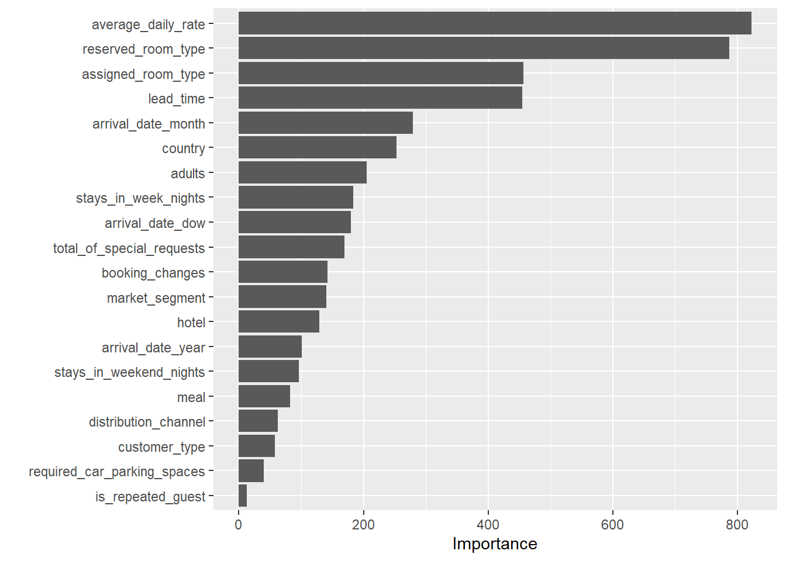
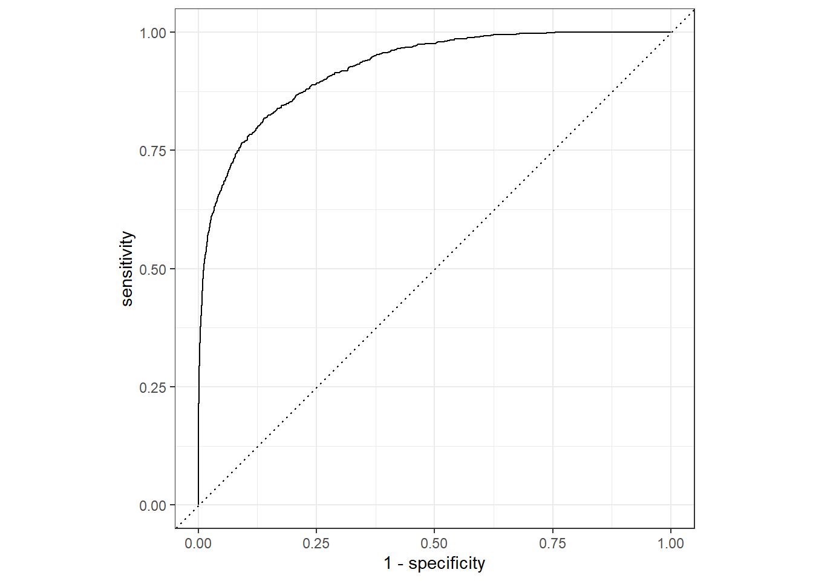

library(tidymodels)
library(readr)
library(vip)
hotels = read_csv("https://tidymodels.org/start/case-study/hotels.csv") %>%
mutate(across(where(is.character), as.factor))Hotel Bookings Predictive Model
Overview
The data we are going to use is hotel bookings data. It came from Antonio, Almeida, and Nunes (2019). We will create a predictive model to predict which hotel stays included babies and/or children. We will use different hotel stay attributes to come up a prediction. Below is our data dictionary that should help us understand the data better.
| variable | class | description |
|---|---|---|
| hotel | character | Hotel (H1 = Resort Hotel or H2 = City Hotel) |
| is_canceled | double | Value indicating if the booking was canceled (1) or not (0) |
| lead_time | double | Number of days that elapsed between the entering date of the booking into the PMS and the arrival date |
| arrival_date_year | double | Year of arrival date |
| arrival_date_month | character | Month of arrival date |
| arrival_date_week_number | double | Week number of year for arrival date |
| arrival_date_day_of_month | double | Day of arrival date |
| stays_in_weekend_nights | double | Number of weekend nights (Saturday or Sunday) the guest stayed or booked to stay at the hotel |
| stays_in_week_nights | double | Number of week nights (Monday to Friday) the guest stayed or booked to stay at the hotel |
| adults | double | Number of adults |
| children | double | Number of children |
| babies | double | Number of babies |
| meal | character | Type of meal booked. Categories are presented in standard hospitality meal packages: Undefined/SC – no meal package; BB – Bed & Breakfast; HB – Half board (breakfast and one other meal – usually dinner); FB – Full board (breakfast, lunch and dinner) |
| country | character | Country of origin. Categories are represented in the ISO 3155–3:2013 format |
| market_segment | character | Market segment designation. In categories, the term “TA” means “Travel Agents” and “TO” means “Tour Operators” |
| distribution_channel | character | Booking distribution channel. The term “TA” means “Travel Agents” and “TO” means “Tour Operators” |
| is_repeated_guest | double | Value indicating if the booking name was from a repeated guest (1) or not (0) |
| previous_cancellations | double | Number of previous bookings that were cancelled by the customer prior to the current booking |
| previous_bookings_not_canceled | double | Number of previous bookings not cancelled by the customer prior to the current booking |
| reserved_room_type | character | Code of room type reserved. Code is presented instead of designation for anonymity reasons |
| assigned_room_type | character | Code for the type of room assigned to the booking. Sometimes the assigned room type differs from the reserved room type due to hotel operation reasons (e.g. overbooking) or by customer request. Code is presented instead of designation for anonymity reasons |
| booking_changes | double | Number of changes/amendments made to the booking from the moment the booking was entered on the PMS until the moment of check-in or cancellation |
| deposit_type | character | Indication on if the customer made a deposit to guarantee the booking. This variable can assume three categories: No Deposit – no deposit was made; Non Refund – a deposit was made in the value of the total stay cost; Refundable – a deposit was made with a value under the total cost of stay. |
| agent | character | ID of the travel agency that made the booking |
| company | character | ID of the company/entity that made the booking or responsible for paying the booking. ID is presented instead of designation for anonymity reasons |
| days_in_waiting_list | double | Number of days the booking was in the waiting list before it was confirmed to the customer |
| customer_type | character | Type of booking, assuming one of four categories: Contract - when the booking has an allotment or other type of contract associated to it; Group – when the booking is associated to a group; Transient – when the booking is not part of a group or contract, and is not associated to other transient booking; Transient-party – when the booking is transient, but is associated to at least other transient booking |
| adr | double | Average Daily Rate as defined by dividing the sum of all lodging transactions by the total number of staying nights |
| required_car_parking_spaces | double | Number of car parking spaces required by the customer |
| total_of_special_requests | double | Number of special requests made by the customer (e.g. twin bed or high floor) |
| reservation_status | character | Reservation last status, assuming one of three categories: Canceled – booking was canceled by the customer; Check-Out – customer has checked in but already departed; No-Show – customer did not check-in and did inform the hotel of the reason why |
| reservation_status_date | double | Date at which the last status was set. This variable can be used in conjunction with the ReservationStatus to understand when was the booking canceled or when did the customer checked-out of the hotel |
Library and Data Import
Outcome Variable Checking
Our goal is to build a motel that will predict which hotel stays included a children and/or babies and which did not. The column that will serve us our outcome variable is children.
hotels %>%
count(children) %>%
mutate(
prop = paste( round((n/sum(n)) * 100,2),"%",sep = "")
)# A tibble: 2 × 3
children n prop
<fct> <int> <chr>
1 children 4038 8.08%
2 none 45962 91.92%We have here the proportion of hotel stay with and without children in it.
Data Splitting and Resampling
We will use 70/30 split for our train and test data. Since we have an imbalance outcome variable class, we will use a stratified sample.
set.seed(123)
splits = initial_split(hotels, strata = children)
hotel_train = training(splits)
hotel_test = testing(splits)
#Check Training set children proportion
hotel_train %>%
count(children) %>%
mutate(
prop = n/sum(n)
)# A tibble: 2 × 3
children n prop
<fct> <int> <dbl>
1 children 3027 0.0807
2 none 34473 0.919 #Check Testing Set children proportion
hotel_test %>%
count(children) %>%
mutate(prop = n/sum(n))# A tibble: 2 × 3
children n prop
<fct> <int> <dbl>
1 children 1011 0.0809
2 none 11489 0.919 We will use validation set resmpling method for our data splits.
set.seed(234)
val_set = validation_split(hotel_train,
strata = children,
prop = 0.80)
val_set# Validation Set Split (0.8/0.2) using stratification
# A tibble: 1 × 2
splits id
<list> <chr>
1 <split [30000/7500]> validationModel #1: Penalized Logistic Regression
Our outcome variable is a categorical column so its only reasonable for us to select Logistic Regression as our base model.
lr_mod = logistic_reg(penalty = tune(), mixture = 1) %>%
set_engine("glmnet")We set the penalty argument to tune() for now to serve as a placeholder temporarily. mixture was set to 1 to instruct our model to remove any possible nuisance variable keeping our model simple.
We can now proceed on creating our model recipe.
holidays <- c("AllSouls", "AshWednesday", "ChristmasEve", "Easter",
"ChristmasDay", "GoodFriday", "NewYearsDay", "PalmSunday")
lr_recipe = recipe(children ~ ., data = hotel_train) %>%
step_date(arrival_date) %>%
step_holiday(arrival_date, holidays = holidays) %>%
step_rm(arrival_date) %>%
step_dummy(all_nominal_predictors()) %>%
step_zv(all_predictors()) %>%
step_normalize(all_predictors())Creating Workflow
lr_workflow = workflow() %>%
add_model(lr_mod) %>%
add_recipe(lr_recipe) Next, grid tuning object.
lr_reg_grid <- tibble(penalty = 10^seq(-4, -1, length.out = 30))
lr_reg_grid %>% top_n(-5) # lowest penalty values# A tibble: 5 × 1
penalty
<dbl>
1 0.0001
2 0.000127
3 0.000161
4 0.000204
5 0.000259lr_reg_grid %>% top_n(5) # highest penalty values# A tibble: 5 × 1
penalty
<dbl>
1 0.0386
2 0.0489
3 0.0621
4 0.0788
5 0.1 Model Training and Tuning
lr_res <-
lr_workflow %>%
tune_grid(val_set,
grid = lr_reg_grid,
control = control_grid(save_pred = TRUE),
metrics = metric_set(roc_auc))
lr_plot <-
lr_res %>%
collect_metrics() %>%
ggplot(aes(x = penalty, y = mean)) +
geom_point() +
geom_line() +
ylab("Area under the ROC Curve") +
scale_x_log10(labels = scales::label_number())
lr_plot This plots shows us that model performance is generally better at the smaller penalty values. This suggests that the majority of the predictors are important to the model. We also see a steep drop in the area under the ROC curve towards the highest penalty values. This happens because a large enough penalty will remove all predictors from the model, and not surprisingly predictive accuracy plummets with no predictors in the model (recall that an ROC AUC value of 0.50 means that the model does no better than chance at predicting the correct class).
top_models <-
lr_res %>%
show_best("roc_auc", n = 15) %>%
arrange(penalty)
top_models# A tibble: 15 × 7
penalty .metric .estimator mean n std_err .config
<dbl> <chr> <chr> <dbl> <int> <dbl> <chr>
1 0.000127 roc_auc binary 0.872 1 NA Preprocessor1_Model02
2 0.000161 roc_auc binary 0.872 1 NA Preprocessor1_Model03
3 0.000204 roc_auc binary 0.873 1 NA Preprocessor1_Model04
4 0.000259 roc_auc binary 0.873 1 NA Preprocessor1_Model05
5 0.000329 roc_auc binary 0.874 1 NA Preprocessor1_Model06
6 0.000418 roc_auc binary 0.874 1 NA Preprocessor1_Model07
7 0.000530 roc_auc binary 0.875 1 NA Preprocessor1_Model08
8 0.000672 roc_auc binary 0.875 1 NA Preprocessor1_Model09
9 0.000853 roc_auc binary 0.876 1 NA Preprocessor1_Model10
10 0.00108 roc_auc binary 0.876 1 NA Preprocessor1_Model11
11 0.00137 roc_auc binary 0.876 1 NA Preprocessor1_Model12
12 0.00174 roc_auc binary 0.876 1 NA Preprocessor1_Model13
13 0.00221 roc_auc binary 0.876 1 NA Preprocessor1_Model14
14 0.00281 roc_auc binary 0.875 1 NA Preprocessor1_Model15
15 0.00356 roc_auc binary 0.873 1 NA Preprocessor1_Model16lr_best <-
lr_res %>%
collect_metrics() %>%
arrange(penalty) %>%
slice(12)
lr_best# A tibble: 1 × 7
penalty .metric .estimator mean n std_err .config
<dbl> <chr> <chr> <dbl> <int> <dbl> <chr>
1 0.00137 roc_auc binary 0.876 1 NA Preprocessor1_Model12#> # A tibble: 1 × 7
#> penalty .metric .estimator mean n std_err .config
#> <dbl> <chr> <chr> <dbl> <int> <dbl> <chr>
#> 1 0.00137 roc_auc binary 0.876 1 NA Preprocessor1_Model12lr_auc <-
lr_res %>%
collect_predictions(parameters = lr_best) %>%
roc_curve(children, .pred_children) %>%
mutate(model = "Logistic Regression")
autoplot(lr_auc)Second Model: Tree-Based Ensemble or Random Forest
Random forest is an efficient yet low-maintenance machine learning model. It offers more flexibility in data types and result compared to Logistic Regression. It is a type of ensemble model mostly containing thousands of decision trees, where each Decision Tree iteration used a slightly different version of the training data and learns a sequence of splitting rules to predict new data. We are going to utilize all of our available cores to improve the training time of our model
cores = parallel::detectCores()
cores[1] 16We have 16 available cores to work with. We can pass it on our model for parallel processing.
rf_mod = rand_forest(mtry = tune(), min_n = tune(), trees = 1000) %>%
set_engine("ranger",num.threads = cores) %>%
set_mode("classification")
#Create the recipe and workflow
rf_recipe <-
recipe(children ~ ., data = hotel_train) %>%
step_date(arrival_date) %>%
step_holiday(arrival_date) %>%
step_rm(arrival_date) Then we are going to add this recipe to our parsnip model for a new workflow on predicting whether a children is included on a hotel stay.
rf_workflow = workflow() %>%
add_model(rf_mod) %>%
add_recipe(rf_recipe)Train and Tune the model.
rf_modRandom Forest Model Specification (classification)
Main Arguments:
mtry = tune()
trees = 1000
min_n = tune()
Engine-Specific Arguments:
num.threads = cores
Computational engine: ranger #> Random Forest Model Specification (classification)
#>
#> Main Arguments:
#> mtry = tune()
#> trees = 1000
#> min_n = tune()
#>
#> Engine-Specific Arguments:
#> num.threads = cores
#>
#> Computational engine: ranger
# show what will be tuned
extract_parameter_set_dials(rf_mod)Collection of 2 parameters for tuning
identifier type object
mtry mtry nparam[?]
min_n min_n nparam[+]
Model parameters needing finalization:
# Randomly Selected Predictors ('mtry')
See `?dials::finalize` or `?dials::update.parameters` for more information.#> Collection of 2 parameters for tuning
#>
#> identifier type object
#> mtry mtry nparam[?]
#> min_n min_n nparam[+]
#>
#> Model parameters needing finalization:
#> # Randomly Selected Predictors ('mtry')
#>
#> See `?dials::finalize` or `?dials::update.parameters` for more information.set.seed(345)
rf_res <-
rf_workflow %>%
tune_grid(val_set,
grid = 25,
control = control_grid(save_pred = TRUE),
metrics = metric_set(roc_auc))
#> i Creating pre-processing data to finalize unknown parameter: mtryLet’s check the top 5 random forest model out of the 25 candidates.
rf_res %>%
show_best(metric = "roc_auc")# A tibble: 5 × 8
mtry min_n .metric .estimator mean n std_err .config
<int> <int> <chr> <chr> <dbl> <int> <dbl> <chr>
1 8 7 roc_auc binary 0.926 1 NA Preprocessor1_Model13
2 12 7 roc_auc binary 0.925 1 NA Preprocessor1_Model01
3 9 12 roc_auc binary 0.925 1 NA Preprocessor1_Model19
4 7 25 roc_auc binary 0.924 1 NA Preprocessor1_Model03
5 13 4 roc_auc binary 0.924 1 NA Preprocessor1_Model05We can already see how the result of random forest is way better compared to the penalized logistic regression which resulted to an ROC AUC of 0.876. Let’s continue by selecting the best model.
rf_best <-
rf_res %>%
select_best(metric = "roc_auc")
rf_best# A tibble: 1 × 3
mtry min_n .config
<int> <int> <chr>
1 8 7 Preprocessor1_Model13#> # A tibble: 1 × 3
#> mtry min_n .config
#> <int> <int> <chr>
#> 1 8 7 Preprocessor1_Model13We will collect the data we need to plot an ROC AUC curve and compare it with the penalized Logistic Regression ROC AUC Curve
rf_res %>%
collect_predictions()# A tibble: 187,500 × 8
id .pred_children .pred_none .row mtry min_n children .config
<chr> <dbl> <dbl> <int> <int> <int> <fct> <chr>
1 validation 0.148 0.852 13 12 7 none Preprocessor…
2 validation 0.0262 0.974 20 12 7 none Preprocessor…
3 validation 0.472 0.528 22 12 7 children Preprocessor…
4 validation 0.00918 0.991 23 12 7 none Preprocessor…
5 validation 0.0110 0.989 31 12 7 none Preprocessor…
6 validation 0.000643 0.999 38 12 7 none Preprocessor…
7 validation 0 1 39 12 7 none Preprocessor…
8 validation 0.00235 0.998 50 12 7 none Preprocessor…
9 validation 0.0217 0.978 54 12 7 none Preprocessor…
10 validation 0.0389 0.961 57 12 7 children Preprocessor…
# ℹ 187,490 more rowsrf_auc <-
rf_res %>%
collect_predictions(parameters = rf_best) %>%
roc_curve(children, .pred_children) %>%
mutate(model = "Random Forest")bind_rows(rf_auc, lr_auc) %>%
ggplot(aes(x = 1 - specificity, y = sensitivity, col = model)) +
geom_path(lwd = 1.5, alpha = 0.8) +
geom_abline(lty = 3) +
coord_equal() +
scale_color_viridis_d(option = "plasma", end = .6)
The Final Model
We will now finalize the model with its best performing hyperparameter values.
# the last model
last_rf_mod <-
rand_forest(mtry = 8, min_n = 7, trees = 1000) %>%
set_engine("ranger", num.threads = cores, importance = "impurity") %>%
set_mode("classification")
# the last workflow
last_rf_workflow <-
rf_workflow %>%
update_model(last_rf_mod)
# the last fit
set.seed(345)
last_rf_fit <-
last_rf_workflow %>%
last_fit(splits)
last_rf_fit# Resampling results
# Manual resampling
# A tibble: 1 × 6
splits id .metrics .notes .predictions .workflow
<list> <chr> <list> <list> <list> <list>
1 <split [37500/12500]> train/test sp… <tibble> <tibble> <tibble> <workflow>Evaluating Final Model performance
last_rf_fit %>%
collect_metrics()# A tibble: 2 × 4
.metric .estimator .estimate .config
<chr> <chr> <dbl> <chr>
1 accuracy binary 0.946 Preprocessor1_Model1
2 roc_auc binary 0.924 Preprocessor1_Model1Check variable importance
last_rf_fit %>%
extract_fit_parsnip() %>%
vip(num_features = 20)
Plotting the ROC Curve of the Final Model
last_rf_fit %>%
collect_predictions() %>%
roc_curve(children, .pred_children) %>%
autoplot()